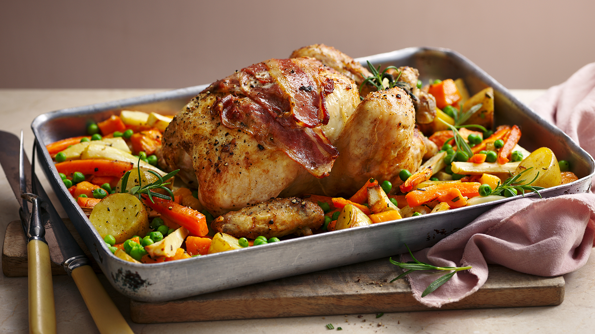

One-Pan Roast Chicken Dinner
Recipe from:BBC

Preparation Time:
1-2 hrs
Ingredients:
- 1 medium chicken (roughly 1.6kg/3lb 8oz)
- ½ lemon, halved
- 3 tbsp oil, olive or sunflower
- 300g/10½oz new potatoes, halved
- 2 medium sweet potatoes (300g/10½oz), peeled and cut into roughly 3cm/1¼in chunks
- 3 medium carrots (300g/10½oz), peeled and cut into roughly 5cm/2in long batons
- 2 medium parsnips (300g/10½oz), peeled and cut into roughly 5cm/2in long batons
- 1 long sprig fresh rosemary or a small bunch of thyme, leaves roughly chopped
- 4 rashers smoked back bacon
- 100g/3½ oz frozen peas
- flaked sea salt and black pepper
Instructions:
- Preheat the oven to 200C/180C Fan/Gas 6. Place the chicken in a large, roasting tin and remove any trussing elastic or string.
- Put the lemon pieces inside the chicken. Drizzle 1 tablespoon of the oil over the chicken. Season with flaked sea salt and black pepper and roast for 30 minutes.
- Put the vegetables and chopped herbs into a large bowl. Pour over the remaining oil and season with salt and pepper. Toss together. Place the vegetables around the chicken in the roasting tin and return to the oven for a further 20 minutes.
- Take the chicken out of the oven, and give the vegetables a stir. Put the bacon on top of the chicken and roast for another 20 minutes.
- Add the frozen peas to the pan and bake for a final 10 minutes. Check the chicken is fully cooked by cutting into the thickest part of the thigh. The juices should run clear.
- Move the chicken to a warmed plate and set aside to rest for 15 minutes. Spoon the vegetables into a warmed dish once the chicken is out of the tin. Serve the chicken carved into chunky pieces, with the vegetables and cooking juices spooned over.
Back to Homepage